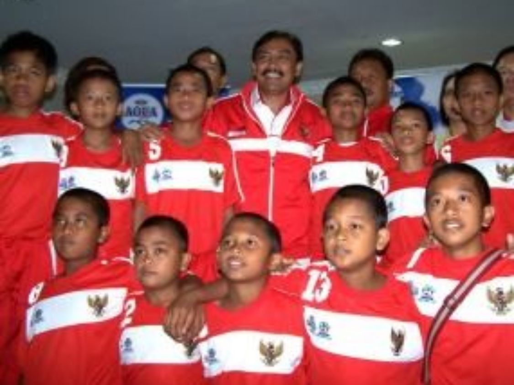
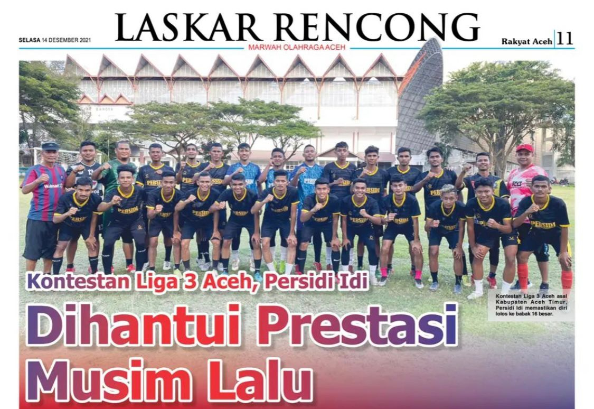

Satria Denda Saputra
Saya adalah atet sepak bola dan juga mahasiswa yang tetap aktif dalam menjalankan pendidikan reguler,sepak bola bagi saya adalah sumber kehidupan dalam masa muda saya saat ini.menjalankan pendidikan dan profesi sebagai atlet bukan hal yang mudah
bagi orang lain sepak bola adalah hal biasa,tetapi ini berpengaruh dalam karir pendidikan saya dan kehidupan sehari hari,dalam sisi lain saya bisa melanjutkan pendidikan perguruan tinggi juga karena sepak bola,

Saya mengenal sepak bola dari umur 5 tahun,dan mulai menekuni sekolah sepak bola Indonesia Muda sejak kelas 2 SD,dari situ saya banyak belajar tentang pengalaman yang dapat membuat saya berkembang,tahun 2011 seperti tidak percaya saya mendapatkan panggilan timnas u12 untuk mengikuti danone nation cup di Bernabeu,Spanyol.
Setelah lulus SD saya di terima di salah satu sekolah di kota saya sendiri yaitu SMP Negeri 4 Sragen yang di kenal sebagai salah satu sekolah yang isinya atlet berbagai macam cabang olahraga,waktu smp saya sangat aktif di pendidikan dan hanya bermain sepak bola di kota saya sendiri.
Kemudian setelah saya lulus SMP saya melanjutkan pendidikan ke salah satu SMK Binawiyata Sragen salah satu SMK favorit yang ada di kota saya,tetapi disekolah ini saya jarang mengikuti pelajaran dan banyak melakukan kegiatan di luar sekolah,saat menduduki kelas 10 saya mendapatkan panggilan seleksi di salah satu tim liga 1 yaitu Bali United U16,setelah di terima disitu saya banyak menghabiskan waktu untuk latihan bersama tim di Bali.
Saat itu karir mulai baik di dunia sepakbola sampai di kelas 12 saya kembali mengkuti seleksi di salah satu tim liga 1 juga yaitu Bhayangkara u19,namun nasib kurang beruntung saat itu saya gagal masuk dalam tim itu,kemudian rejeki kembai datang setelah pengumuman kelulusan sekolah,saya kembali mengikuti seleksi di Borneo FC U19,dan akhirnya saya dapat bergabung dengan tim tersebut,namun saat itu belum banyak mendapatkan menit bermain.

Tahun berikutnya di 2019 adalah tahun berat bagi saya,karir saya terhenti,tidak mendapatkan tawaran tim manapun, tidak ada cerita di tahun ini,merasa bingung hampir putus asa untuk melanjutkan karir saya di sepakbola,di awal 2020 kembali menemukan semangat karena dapat bergabung di salah satu tim liga 3 yaitu Galuh United,tetapi masalah kembali terjadi,covid 19 masuk di indonesia dan menghambat semua kegiatan di indonesia termasuk sepak bola lebih dari 1 tahun.
akhirnya semangat kembali turun dan berfikir untuk mengakhiri karir,di pertengahan tahun 2020 memiliki keinginan untuk melanjutkan ke pendidikan tinggi,namun ada faktor ekonomi yang membuat saya bingung bagaimana cara agar bisa kuliah,dan saya mencari jalan beasiswa.Kembali ada jalan,saya mendapatkan beasiswa di Universitas Dian Nuswantoro.
November Tahun 2021 jalan kembali datang di sepak bola,kembali mendapatkan tawaran di liga 3 Aceh yaitu Persidi Idi Aceh Timur,kurang lebih 3 bulan saya berada di tim itu,karena gagal membawa ke putaran nasional dan terhenti di babak 8 besar regional saya kembali menyelesaikan perkuliahan,
Tahun 2022 bergabung di salah satu tim liga 3 regional Nusa Tenggara Barat yaitu Panser FC Sumbawa Barat,sampai di 8 besar masalah kembali datang,tragedi kanjuruhan menyebabkan sepak bola kembali berhenti,dan saya memutuskan untuk pulang dan kembali melanjutkan perkuliahan sampai saat ini,kurang lebihnya seperti itu pengalaman yang saya dapat dalam kehidupan saya sebagai seorang atlet dan tetap menjalankan kewajiban saya sebagai mahasiswa